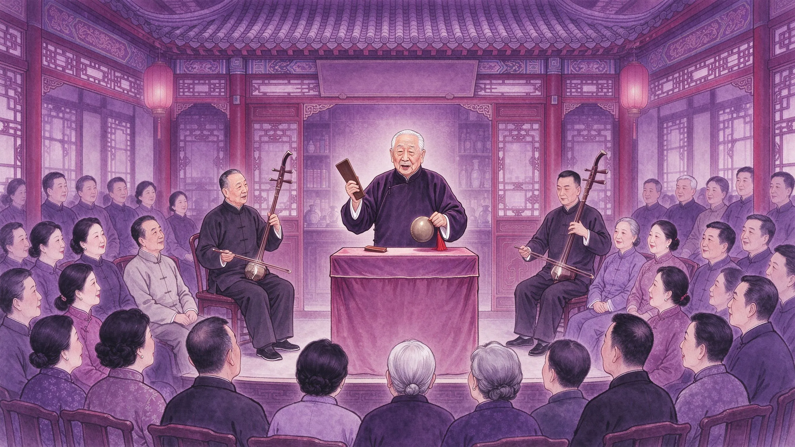
一鼓一板说古今 · 三弦伴奏唱千秋
国家级非物质文化遗产西河大鼓是国家级非物质文化遗产，起源于清代中叶的冀中平原，因发源于大清河（古称西河）流域而得名。它是华北地区最具代表性的曲艺形式之一，与京东大鼓、乐亭大鼓并称"河北三大鼓书"。
西河大鼓的表演形式为一人坐唱，演员左手持板（木板或铜板），右手击鼓，自伴自唱。伴奏乐器以三弦为主，有时辅以四胡、琵琶等。唱腔丰富多变，既有高亢激昂的"硬唱"，也有委婉抒情的"软唱"。
西河大鼓的曲目内容广泛，涵盖历史演义、英雄传奇、民间故事、公案小说等，是民间文化传播的重要载体。2006年，西河大鼓被列入第一批国家级非物质文化遗产名录。
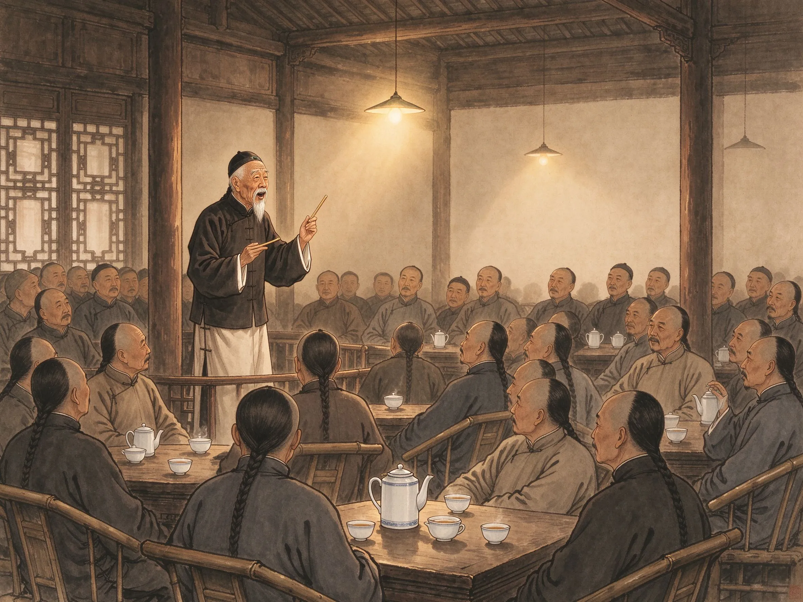
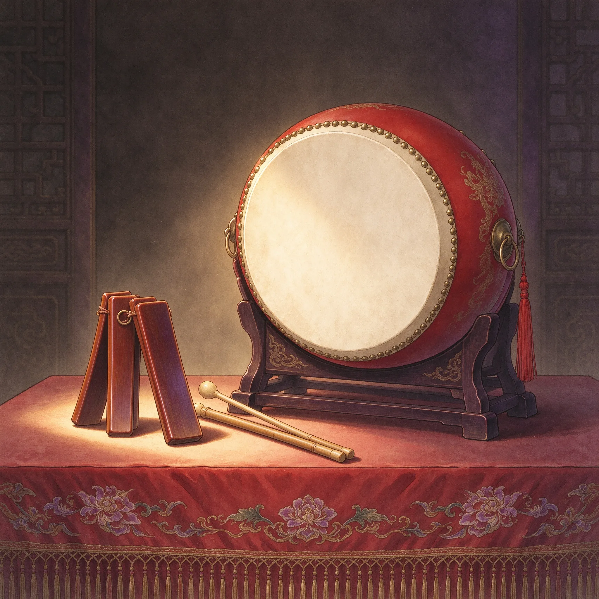
演员左手持板（木板或铜板），右手执鼓签击鼓。鼓声控制节奏，板声点缀节拍，是表演的核心打击乐器。鼓点变化丰富，可表现紧张、舒缓、激昂等不同情绪。
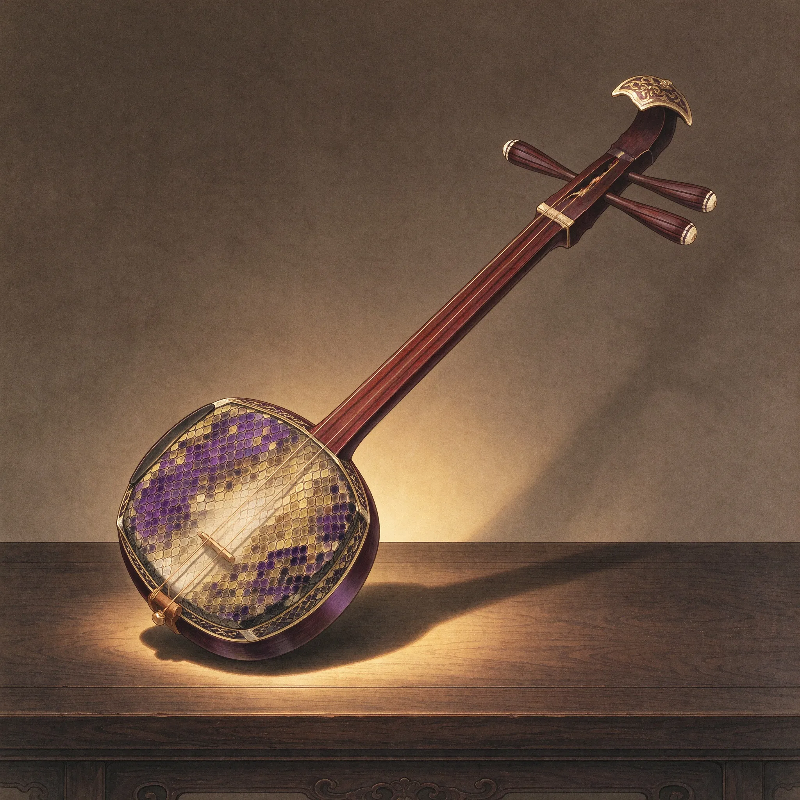
西河大鼓的主要伴奏乐器，音色浑厚圆润，表现力丰富。三弦伴奏与唱腔紧密配合，既烘托气氛，又填补唱腔间隙，是西河大鼓音乐性的关键。
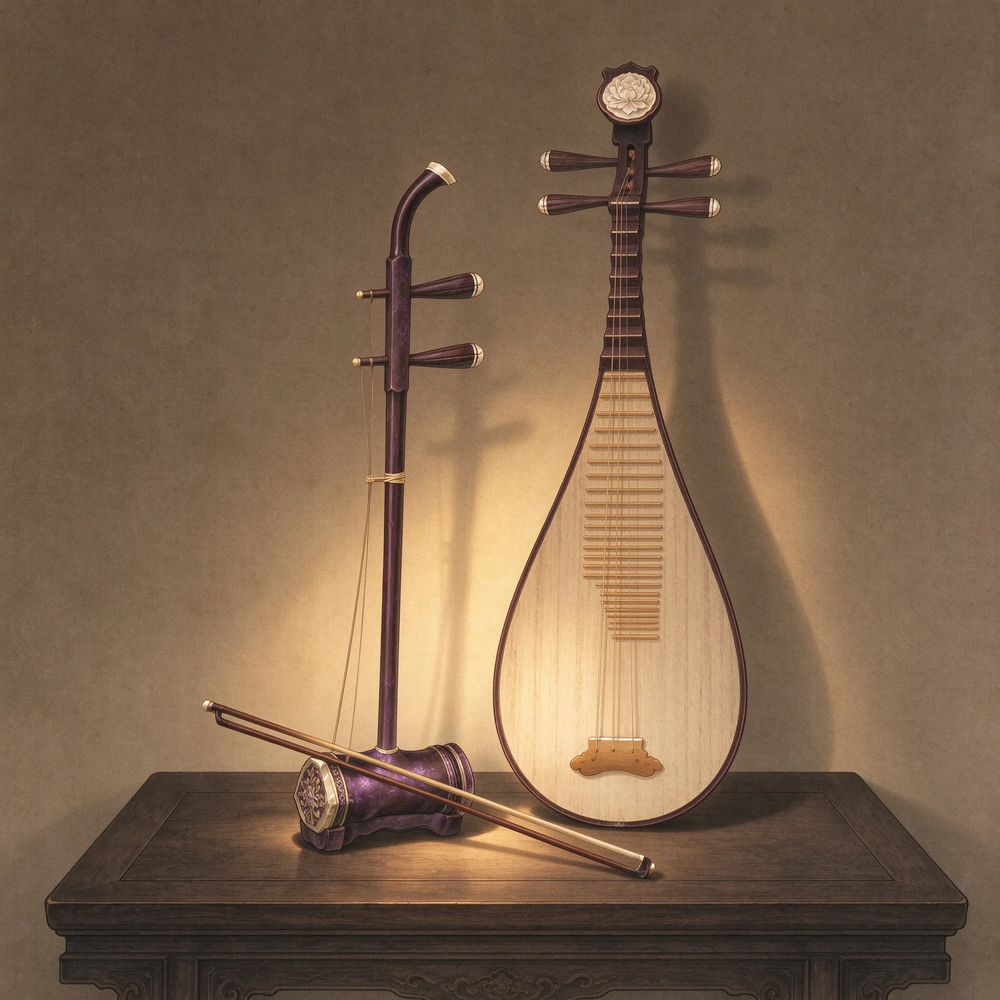
四胡、琵琶等乐器在大型演出中作为辅助伴奏，丰富音乐层次。现代演出中有时加入电子琴等现代乐器，在保持传统韵味的同时增添时代感。
讲述杨家世代忠良、保家卫国的英雄故事，是西河大鼓最经典的长篇书目之一。
以呼延赞家族为主角，展现北宋年间的忠奸斗争与英雄传奇。
讲述包拯断案如神的故事，情节曲折，深受百姓喜爱。
以唐代历史为背景，讲述薛刚反抗武后、恢复李唐的英雄事迹。
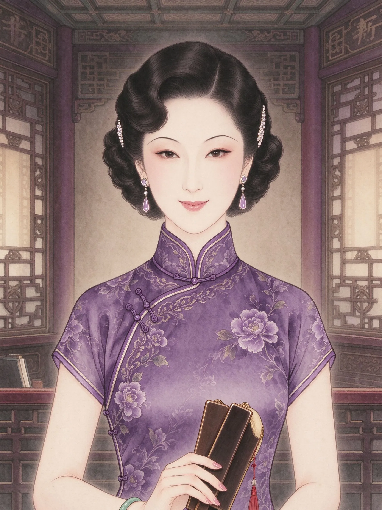
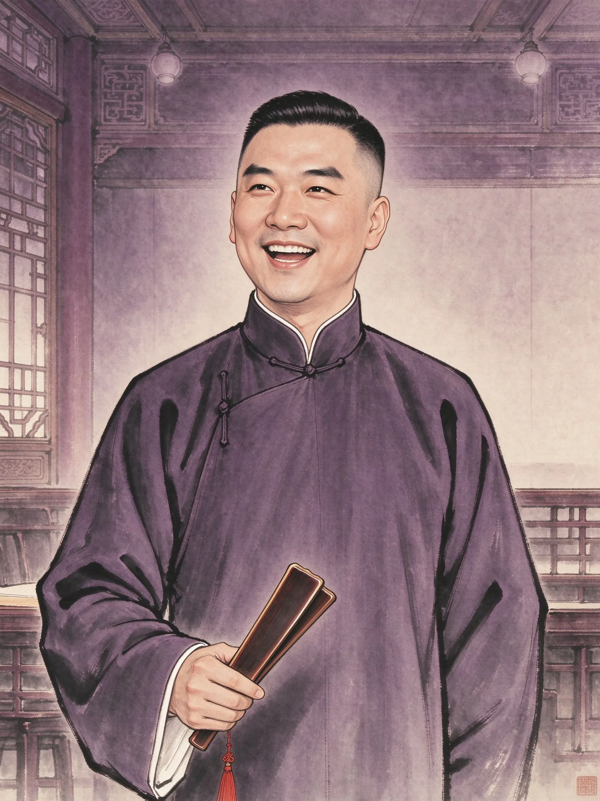
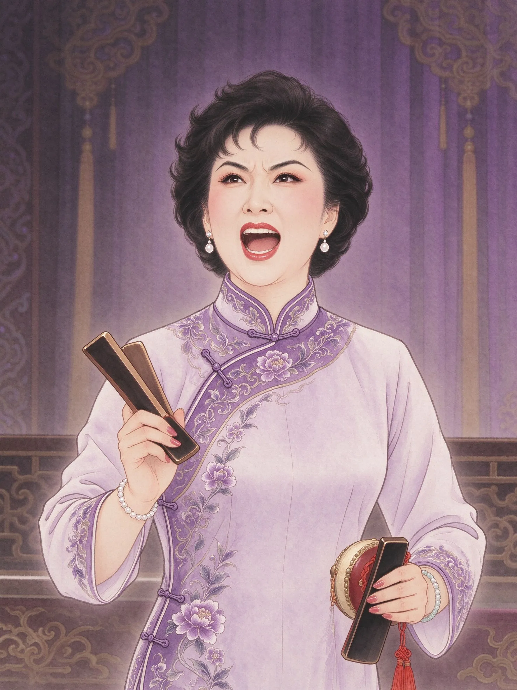
西河大鼓不仅是曲艺表演，更是民间文化传播的重要载体。在电视、网络尚未普及的年代，书场是百姓获取历史知识、道德教化的主要渠道。
西河大鼓的艺人多为半农半艺，农忙时务农，农闲时走乡串村说书。他们口传心授，将一部部历史演义、英雄传奇代代相传，成为民间文化的活态传承者。
在当代，西河大鼓面临受众老龄化、传承人流失等挑战。通过录制音视频资料、建立曲谱数据库、开展校园曲艺课程、利用新媒体平台传播等方式，西河大鼓正在探索新的传承路径。
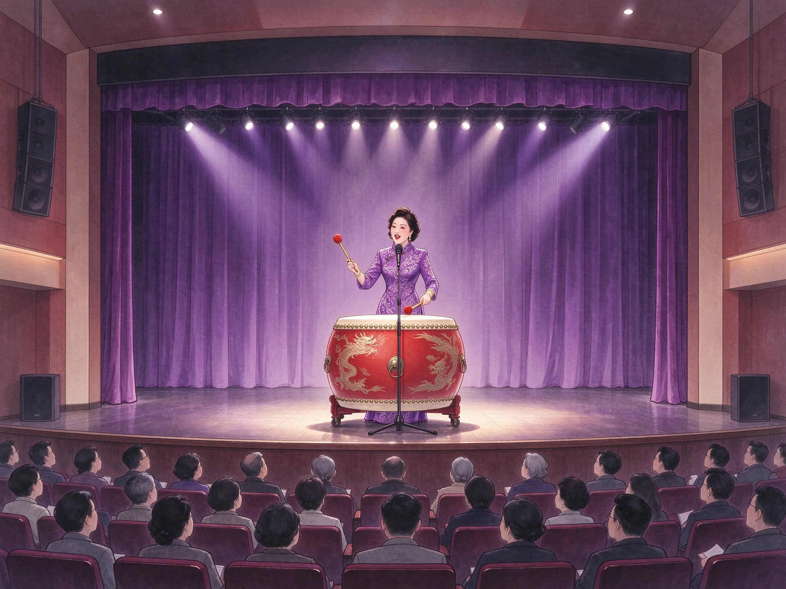
书场是西河大鼓赖以生存的空间载体。从清末的茶馆书场到民国的乡村书棚，再到当代的现代化剧场，书场的形态不断演变，但"听书"这一文化体验的核心始终未变——一壶茶、一段书、一群痴迷的听众。
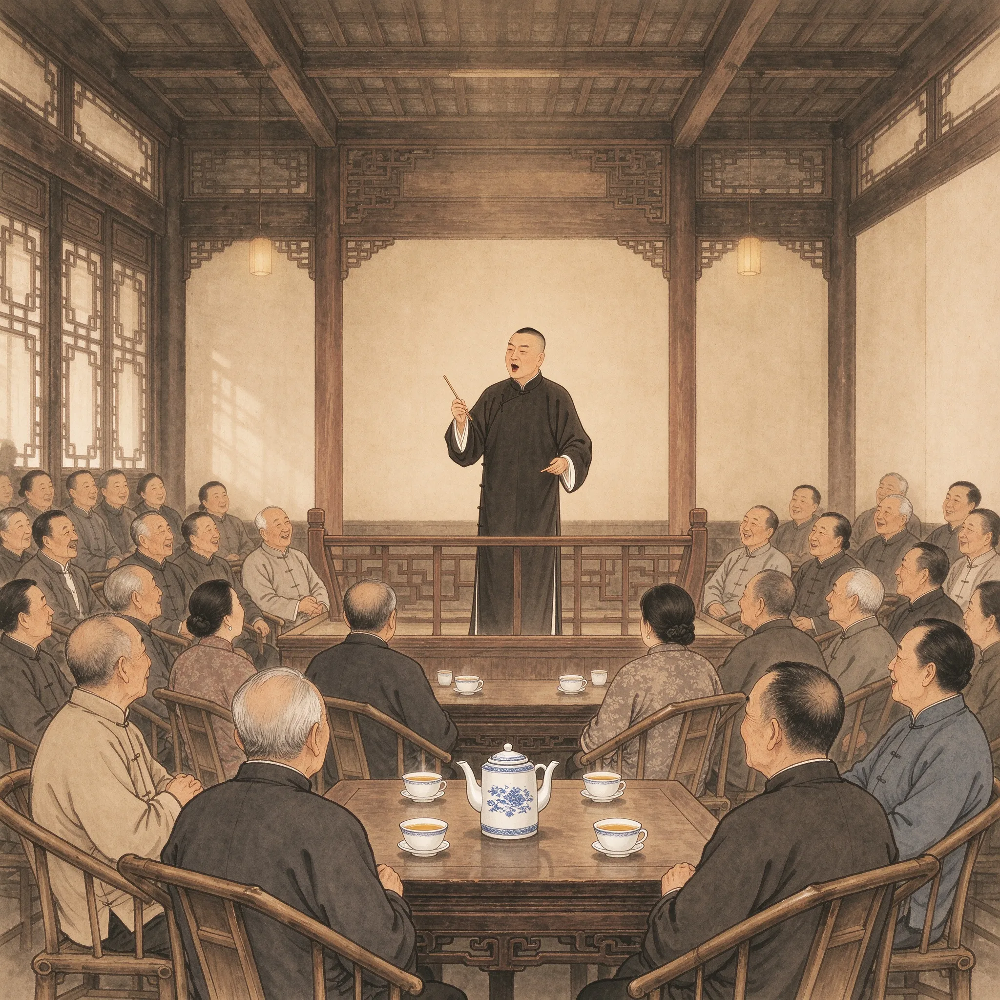
清末至民国时期，茶馆是最主要的书场形式。茶客们围坐八仙桌旁，品茗听书。艺人在堂中设一小台，鼓板一响，满座皆静。茶馆书场氛围亲切，听众与艺人距离极近，互动频繁。
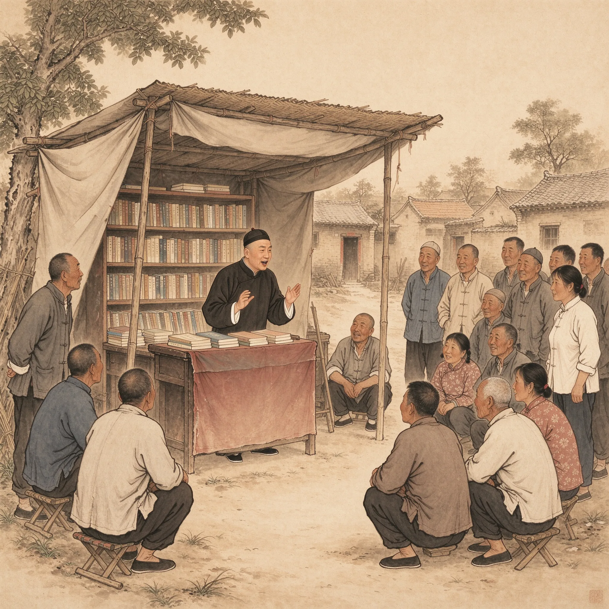
在冀中农村，每逢农闲时节或庙会庆典，村里便搭起临时书棚。露天场地、简易舞台，却聚集了十里八乡的听书爱好者。书棚下的西河大鼓，带着泥土的芬芳和乡音的亲切。
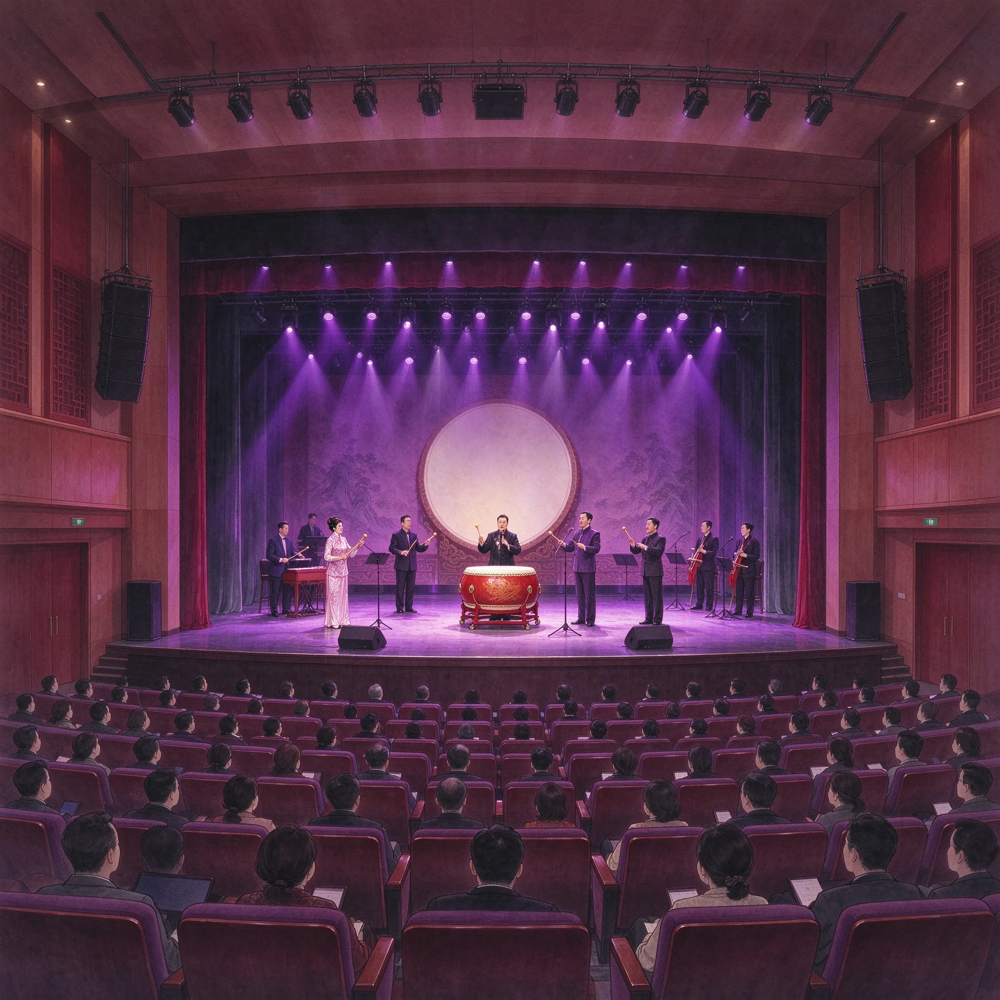
当代西河大鼓演出已步入专业剧场、文化馆等现代化场所。专业的灯光音响设备、舒适的观众座椅，让传统曲艺焕发出新的舞台魅力。曲艺专场演出成为城市文化生活的组成部分。
西河大鼓的唱腔丰富多变，不同板式、不同流派各有其独特的声腔特征。通过音频波形可视化技术，我们可以将经典唱段的音乐之美转化为直观的视觉体验，感受声腔的起伏跌宕与情感张力。
此段为武戏高潮，鼓点密集如战鼓催征，唱腔高亢激昂，三板快板的节奏将金沙滩之战的紧张气氛渲染到极致。波形呈现出密集而有力的脉冲特征。
包公怒铡陈世美的经典段落，二板叙事平稳推进，在关键转折处突然转入三板，声腔由沉稳转为激昂。波形呈现出由缓至急的戏剧性变化。
呼延灼蒙难一段，头板慢唱如泣如诉，旋律婉转低回，将英雄落难的悲愤与无奈表现得淋漓尽致。波形呈现出悠长而起伏的弧线特征。
薛刚祭坟的情感爆发段落，散板自由发挥，唱腔忽高忽低、忽快忽慢，将悲愤交加的情感推向高潮。波形呈现出自由而不规则的剧烈波动。
中国鼓书艺术源远流长，不同地域的鼓书各有特色。西河大鼓作为河北三大鼓书之一，与京东大鼓、乐亭大鼓、山东大鼓等姊妹艺术既有共通之处，又各具鲜明的地方特色。了解它们之间的异同，有助于更深入地认识西河大鼓的独特价值。
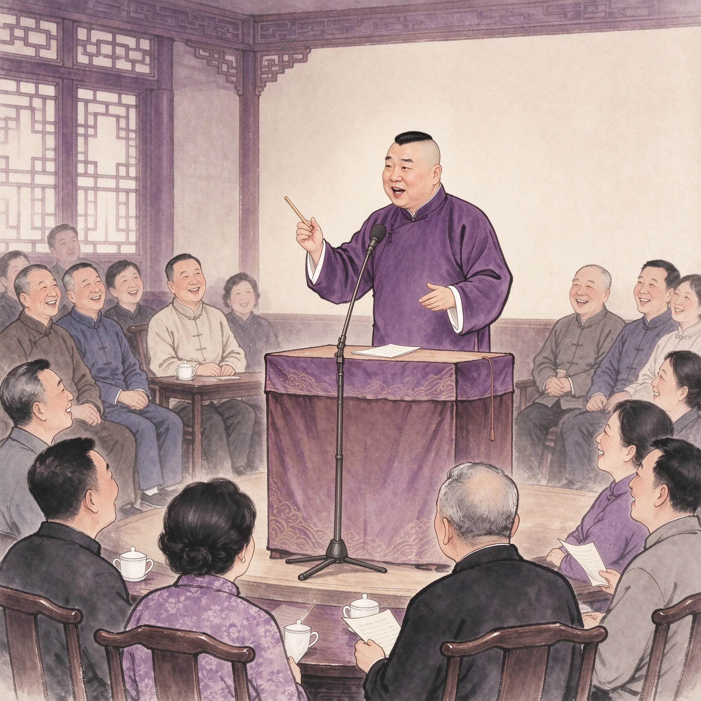
京东大鼓流行于京津一带，唱腔较为通俗明快，语言以京味方言为主，带有浓厚的北京韵味。与西河大鼓相比，京东大鼓更偏重说功，唱段中"说"的比例更大，表演风格更加生活化。
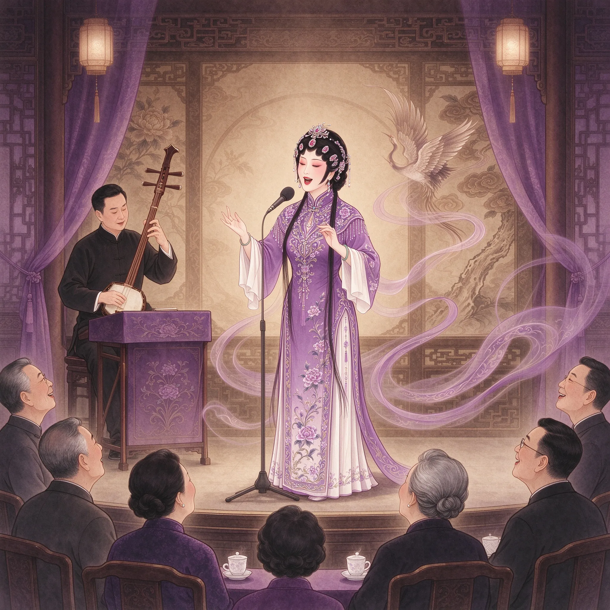
乐亭大鼓以唱功见长，旋律优美动听，有"北方最优美的鼓书"之称。与西河大鼓相比，乐亭大鼓的唱腔更加婉转细腻，音乐性更强，但叙事性稍弱。两者在伴奏乐器上也有差异。
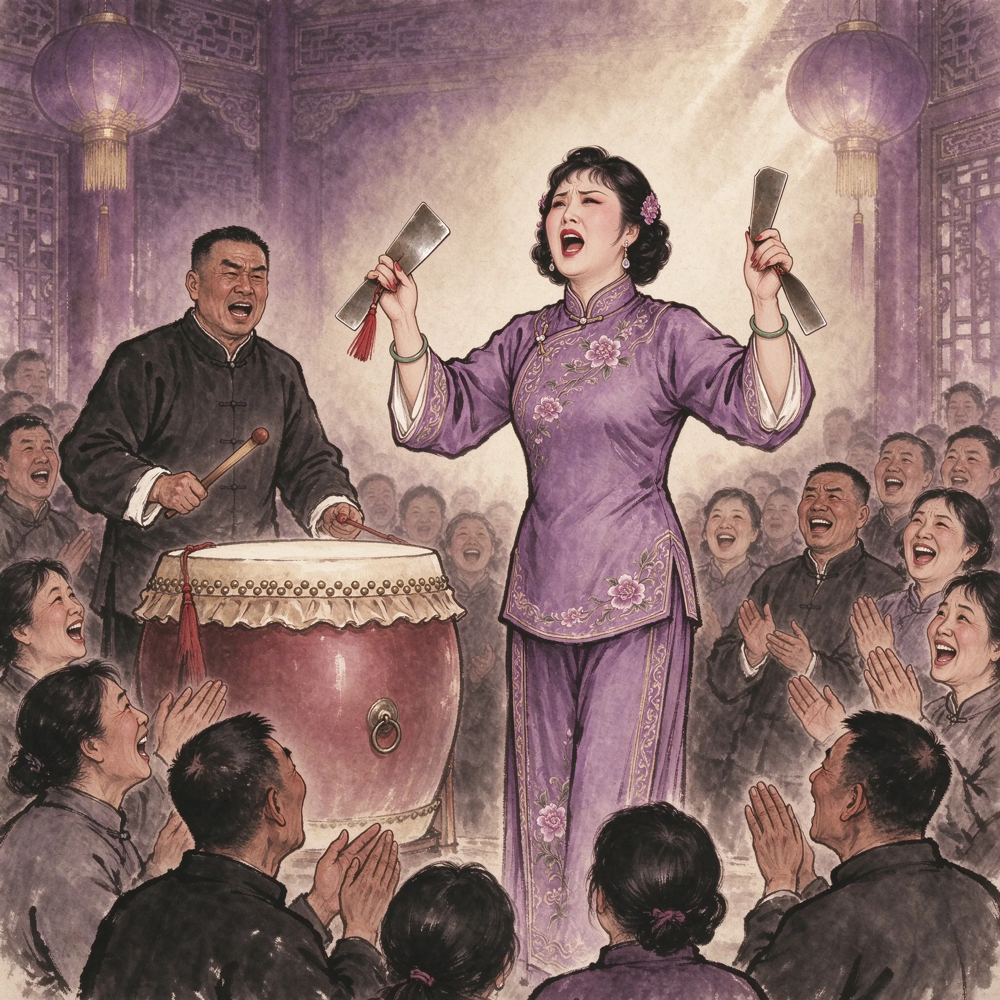
山东大鼓（又称梨花大鼓）历史悠久，是北方鼓书的源头之一。与西河大鼓相比，山东大鼓保留了更多古老的说唱特征，唱腔质朴粗犷，带有浓郁的齐鲁地方风味，伴奏以铁板击节为特色。
面对新媒体时代的冲击，西河大鼓正在积极探索多元化的传承路径。一方面通过专业录音录像对老艺人的经典唱段进行抢救性记录，建立数字化的曲艺档案库；另一方面通过曲艺进校园活动，培养年轻一代的听众和传承人。
短视频平台和直播为西河大鼓打开了全新的传播渠道。越来越多的曲艺演员开始在抖音、快手等平台发布演出片段，一些精彩唱段获得了数百万次的播放量。新媒体传播让这一传统艺术形式突破了地域限制，触及更广泛的受众群体。
在保持传统艺术精髓的前提下，西河大鼓也在尝试与现代元素融合，创作反映当代生活的新书目，探索曲艺与现代音乐、戏剧等艺术形式的跨界合作，为这一古老艺术注入新的时代活力。
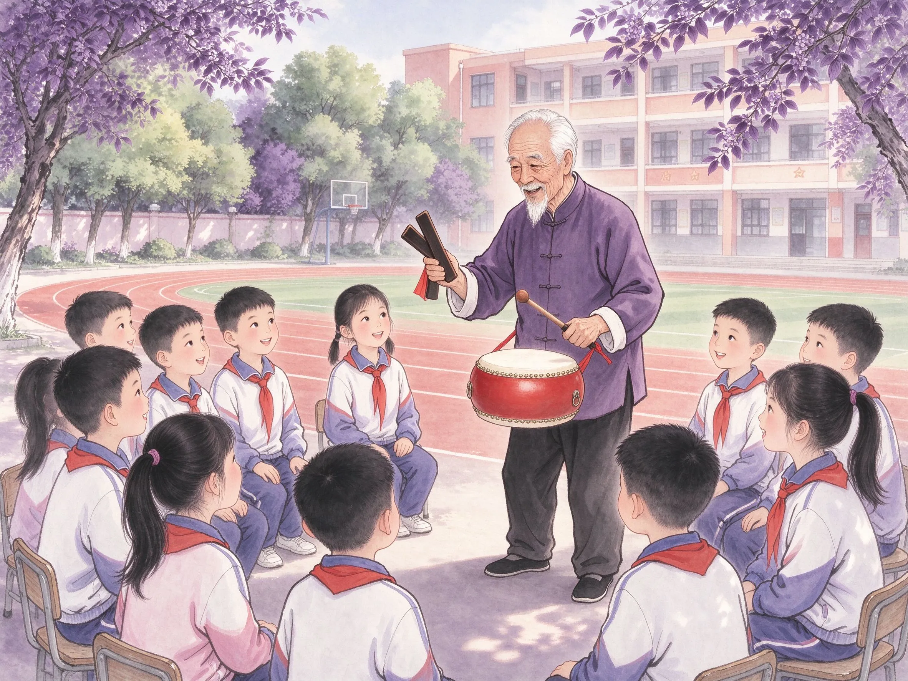
对在世老艺人的经典唱段进行专业录音录像，建立完整的音视频数字档案。同时收集整理散落在民间的手抄本、工尺谱等珍贵资料，进行数字化保存。
与中小学及高校合作开设曲艺传承课程，邀请非遗名家授课。通过"曲艺进校园"活动，让学生近距离感受西河大鼓的魅力，培养年轻受众群体。
利用短视频、直播等新媒体平台传播西河大鼓，打造"网红"曲艺演员。通过线上互动、话题挑战等方式吸引年轻受众关注，让传统曲艺在互联网时代焕发新生。